SUMMARY
This project outlines the journey of designing an end-to-end service experience for Atlanta Symphony Orchestra (ASO) to gather valuable community audience feedback in an integrated, low-cost and non-intrusive manner. We introduced a streamlined process, various digital touch-points as well as their non-digital alternatives aligned to integrate well with ASO’s current infrastructure.
Background
ASO is a nationally acclaimed, award winning orchestra committed to building foundations of artistic integrity. One of the ways they work towards this is through their non-profit Musicians in Community (MIC) program that exposes underserved and underrepresented groups to classical music through free concerts, lecture demonstrations and workshops.

Team members
Swar Gujrania
Tae Prasongpongchai
Gurudutt Perichetla
My contributions
Service Designer, UX Designer
- Problem definition & scoping
- Needs, constraints, value mapping
- Interaction Design
- User journey mapping
- Introduced credit rewards systems
Project Liaison
- Managed stakeholder communication, tracked project progress and led documentation
User research
- Designed & led stakeholder need finding workshop
- Analyzed the audience survey
- Conducted stakeholder interviews
PROBLEM
MIC representatives are currently looking to gather audience’s feedback for their free, community concerts.
-
Lack of a consistent process
MIC representatives currently do not have a consistent process to gather audience feedback
-
Manual efforts
Sometimes, after the concert, organizers talk to some audience members to learn about their experience; other times they leverage a short in-person survey for the same.
-
Resource constraints
Being the non-profit arm of ASO, MIC team often works under tight constraints on their resources (monetary, technology and people)
Impact
-
Audience dissatisfaction,
Loss of patronsLack of feedback mechanism leads to gap between what audience expects and what ASO delivers, which further leads to audience dissatisfaction and loss of patrons
-
Inability to demonstrate effectiveness of programs
MIC team is unable to show “numbers” that demonstrate its effectiveness towards its goals of widening ASO’s reach to underserved communities of Atlanta
-
Loss of donors and financial implications
MIC depends on sponsorship and donations to drive the community engagements. The lack of numbers bleeds into these donations and thus can have serious financial implications for the team.
To summarize the problem statement:
ASO gather valuable feedback from the participants of the MIC program in a low-cost, integrated manner without being intrusive to audience’s experience
so that they can…demonstrate their effectiveness in generating community engagement and identify opportunities to further it.
USERS & STAKEHOLDERS
Stakeholder mapping
Primary Users
Experience
Primary Task
- Provide feedback
- Engage better
Primary stakeholders
- ASO
- MIC team
- Donors
Experience
- Low-cost
- Integrated
Primary Task
Value
- Demonstrate effectiveness of MIC initiatives
- Get community “voice”
- Quantifiable performance
Secondary stakeholders
Primary Users
Audience members
15-25 yo
Kalyn21, Student
“I came to the concert because my friend invited me to, and it’s free so we got the tickets online. I’m alright with classical music; I only come to see these performances every year or so.”
- Mainly students
- Conscious of cost
- Concerts are leisurely activity
- Not concerned by performers’ reputation
- Mostly booked tickets online
- Always on the lookout for free concerts
30-50 yo
Melissa43, Accounting
“I saw this event on Facebook and it seems like a good way to spend time with my family this weekend. I go to classical concerts a few times a year.”
- Mainly women
- Attended few times a year
- Heard about the concerts from other people.
- Mostly attended concerts with their family.
- Mostly bought their tickets online
60+ yo
Josh64, Retired
“I go to classical music concerts every few months with my wife. I get concert news directly from ASO and call them to get the tickets. I expect a good, well-organized show from reputable performers.”
- Mostly retired individuals
- High interest in classical music
- Frequent concert attendees
- Performers’ reputation played an important role
- Less tech-savvy and mostly buys tickets in-person or on phone.
Meet Troy, an audience member
(Persona)
Troy Williams (Audience Member)
Demographics
Gender: Male
Age: 24
Job Title: Student
Goals
- Visiting music concerts
- Taking pictures
- Buying Merchandise
Motivations to attend concerts
- Finding new musicians
- Gathering with Family and Friends
- Take mind off things
- Recreation
Pain Points
- Not being able to find parking
- Unavailability of Food
- Long queues and huge wait times
Primary Stakeholders
MIC team (ASO)
Alison Chen (ASO Representative)
Demographics
Gender: Female
Age: 32
Job Title: Development Manager
Goals
- Provide impactful concerts for audiences
- Gather audience feedback
- Get funding
Motivations to organize concerts
- Enrich community experiences
- Introduce audiences to Classical Music
- Improve Future Concerts
Pain Points
- Slow process of feedback data collection
- Communication between siloed departments within the ASO
Donors
Trent Baylor (Donor)
Demographics
Gender: Male
Age: 39
Job Title: Investment Banker
Goals
- Organize Social Campaigns
- Fund projects that support my cause
- Communicate with the ASO to facilitate the grant process
Motivations to organize concerts
- Enrich community experiences
- Make a difference for people of my community
- Improve Future Concerts
Gain Points
- My organization gets exposure through ASO events
- My money is used effectively to support my cause
Ecosystem Map (High-level)
Feedback, impact
information, future
customers
Access to
classical music
I want to improve the program & get more funding
I want deeper feedback & more data but we’re short-staffed.
I want to support a cause I care about.
I want to make sure my money is put to good use.
I want to see a good show & have a good time.
Traditional surveys require too much from me and I don’t usually really care about it.
I have to wait in line for some time before getting inside the hall.
I want to introduce classical music to underserved communities
I want to get feedback about the show and make sure that collaborating w/ ASO was worthwhile
Current User Journey
The current journey of going to a concert is below. To identify opportunities of intervention, we broke the journey down into 3 main sections
Current Journey, broken down into stages
- Learning about the event
- Preparing to come
- Arrive, Check-in
- Get into hall, pick seat
- Receive program notes
- Show starts
- Intermission
- Show continues
- End show
- After show
PROCESS OVERVIEW
Design goals
Based on our research and analysis, we identified the following goals for our end solution. As we navigated through various iterations, these metrics/goals served as the north star for the team.
- Increase audience satisfaction
- Higher response rate from audience
- Ensuring data quality
- Accessibility
- Technical Feasibility
- Ease of data processing
Process Overview
This is an overview of the double-diamond process we took:
activation Research Problem
definition Design &
prototype Test
- Interviews
- Surveys
- Stakeholder workshops
- Empathy Maps
- Persona
- User Journey (current)
- Ecosystem mapping
- Needs-Constraints-Value
- 10 types of innovation
- Business Model Canvas
- Experience metrics
- Process alternatives
- User Journey (Future)
- Touchpoint mapping
- Storyboarding
- Low, High-fi prototypes
- Service Blueprint
- Branding & Visual Design
- Remote Usability
Testing - Stakeholder
Walkthrough
DESIGN EXPLORATIONS
The team designed a service experience to help ASO gather feedback for its community concerts effectively. This experience was:
- End-to-End
- Low cost
- Well-Integrated
- Accessible
Design Themes
Analyzing the current journey, along with insights from research led us to develop main themes that’ll be crucial to designing the intervention journey.
- Multiple small surveys instead of one big survey
- Providing Incentives
- Quantifiable nature of data/ insights
- Providing ways for ASO to follow-up for deeper conversations
- Engaging ways of collecting information
Ideation - 3 alternative journeys
Analyzing the current journey, along with insights from research led us to develop main themes that’ll be crucial to designing the intervention journey.
Physical voting +
Sticky feedback board
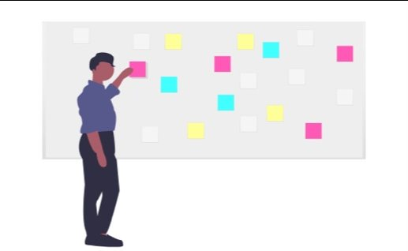
Audience puts token “votes” in physical voting boxes and posts their feedback using colorful stickies on a giant board. ASO members collect and analyze them later
Live voting +
Visualization session
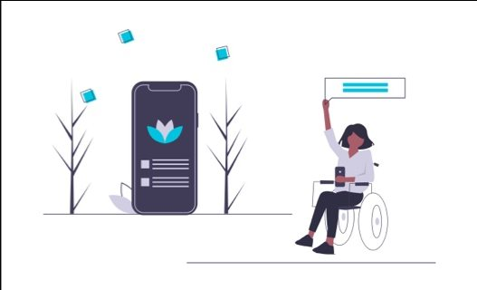
Within the concert, people digitally vote and their feedback is visualized live for everyone to see.
QR Code +
In-App Survey
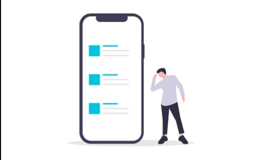
Audience uses QR code to fill out a brief survey. ASO provides incentive through redeemable credits.
Stakeholder’s feedback
A lot of resources and manual effort required. ASO’s MIC team is not very well staffed.
Appealing to stakeholders, but may not be technically feasible. Also, concerned about the kind of responses people may provide in a live session.
Minimal effort, very effective. It might need a back-up for audience members who are not technologically savvy.
Final Concept
Based on stakeholders’ feedback, our final concept had following features:
- Multiple small surveys instead of one big survey
- Surveys were integrated with user journey
- Digital touchpoints integrated with ASO’s ticketing platform
- Leveraged QR code + Digital Survey, but introducing paper surveys too for the older population
- Providing incentives through ASO Credits that can be redeemed at ASO
Here is the final concept as user journey:
- ReservationCollect basic demographic information along with reservation process
- Check-inCollect information on attendance frequency, outreach
- During ConcertProvide details for live feedback, QR code, post concert survey and incentives in program notes
- IntermissionReminder for survey and incentives
- After ConcertUsers scan the QR code to fill a survey digitally. Alternative paper surveys made available for othersText message as reference for how many credits they received
- ASO to reach out post surveyPost-concert in-depth phone interview with those who volunteered
- IncentivesUsers leverage ASO credits for future interactions
Touchpoint overview
- 1
Ticketmaster
For presenting the booking-time demographic survey.
- 2
Mobile Web + SMS
For the rest of the surveys and the ASO Credit system.
- 3
Back-End System
For ASO staff to manage the surveys & display the results.
- 4
Program Book
For advertising the ASO Credits program
- 5
Paper Survey
To cater to the preferences of some audience groups.
AUDIENCE EXPERIENCE DESIGN
User Scenarios - Audience
Scenario 1: Reserving Tickets online
Kalyn is a regular ASO concert attendee. She is always on the lookout for events and because she always wants to ensure her place, she would make a reservation, even when tickets are free.
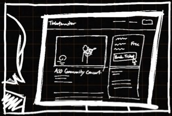
Go to online ticket retail site, look at concert details, decide to book

Fill out the ticket details (no. of tickets, session, zone, etc.)

Fill-out pre-concert demographic details like age, gender, location, etc.

Receive ticket in the email
Receive ASO Credits notification through email / SMS
Please click on the prototype to interact with it
Scenario 2: Arriving at concert & check-in
Kalyn comes to the concert and checks in. Then, as she is entering the hall, she receives program notes and ASO representative informs her about the second part of survey in the notes. Excited about the credits, she scans the QR code and fills up the short survey.
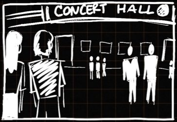
Kalyn arrives at the concert hall & checks-in
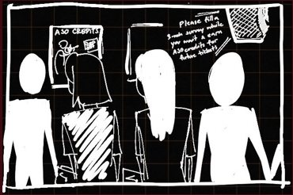
She receives program notes & information about ASO credits

Kalyn scans the QR code, gets to the survey, and fills it out
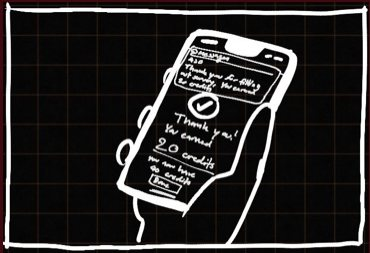
Once submitted, she receives the ASO credits
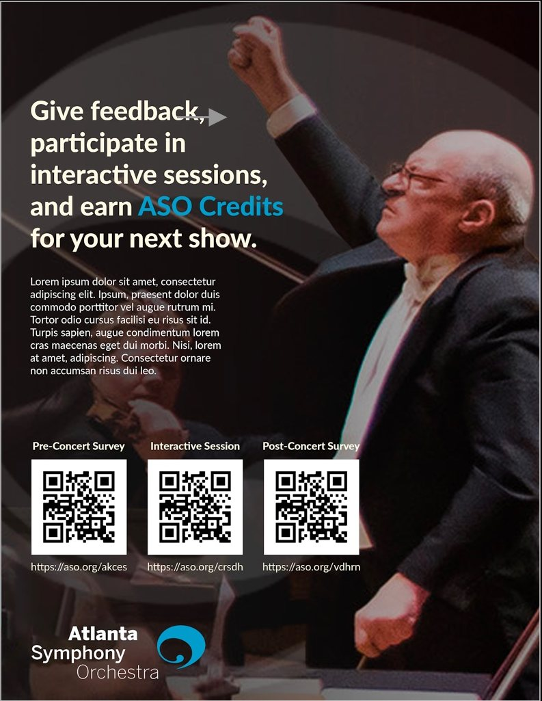
Please click on the prototype to interact with it
Scenario 3: Interactive session
During the concert, there will be an interactive session for patrons to participate with their phones by scanning a QR code in their program notes. The interactive prompt will be based on the theme of the concert. Patrons’ responses will be shown on the screen on the stage. A short survey will follow the interactive prompt. Once completed, the patron will earn ASO Credits
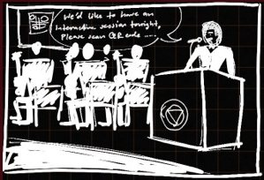
Host introduces feedback session and shows the QR code
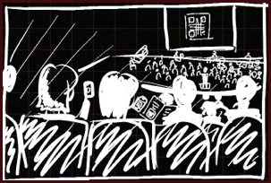
Patrons scan the code & enters interactive experience
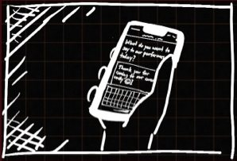
Patrons fill feedback inputs and answers other questions

All responses are displayed; host talks through them
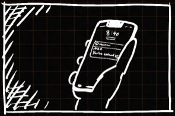
Patrons receive the ASO credits on their phones
Please click on the prototype to interact with it
Scenario 4: Post-Concert survey
After the concert, the host reminds the audience once again about the survey and the incentives. Kalyn scans the QR code once more, completes the remaining survey and receives more credits.
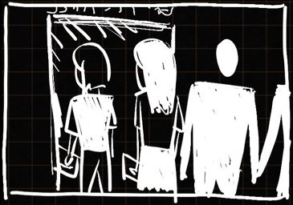
Kalyn leaves concert hall
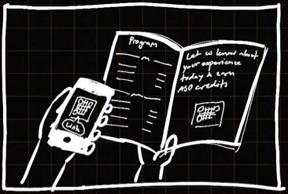
She scans the QR code again

Kalyn fills out the survey

Kalyn receives credit for completing the survey

Please click on the prototype to interact with it
Scenario 5: Redeeming credits
Patrons can use the ASO Credits they have earned to redeem ticket discounts or gifts from the ASO Store. When purchasing an item, the patron will get a promo code that will be used for online orders or a barcode for in-store purchases.
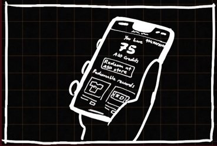
Kalyn checks her ASO credit profile to see her credits

She goes to the ASO store
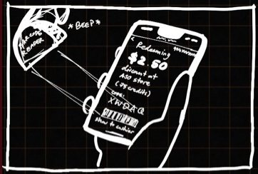
She redeems the credits to buy her favorite items

She decides to redeem her credits for the next concert

Kalyn applies credit when booking her next ticket

Kalyn receives a discount on her next booking
Please click on the prototype to interact with it
STAKEHOLDER EXPERIENCE DESIGN
Scenario 1: Login
ASO Employees can log into the dedicated Feedback Platform and view the list of upcoming concerts and past concerts. Then, they can edit surveys and view audience responses.
Please click on the prototype to interact with it
Scenario 2: Edit surveys
ASO Employees can log into the dedicated Feedback Platform and view the list of upcoming concerts and past concerts. Then, they can edit surveys and view audience responses.
Please click on the prototype to interact with it
Scenario 3: Viewing Audience Responses
ASO Employees can view detailed audience responses as a report of gathered feedback for each concert.
Please click on the prototype to interact with it
VISUAL LANGUAGE
The visual design of the audience-side touchpoints is based on ASO’s current visual language.
Typography
AaAaAaAaAaAaAa
BLACKBOLDREGULARLIGHTHAIRLINE
The quick brown fox jumps over the lazy dog
0123456789
Colors palette

EVALUATION
Remote Usability Testing
The audience mobile experience was tested through remote usability testing sessions to gather feedback and evaluate the design idea.
Participants
6 Participants
4 Males, 2 Females
4 in their 20s, 1 in their 30s, 1 in their 60s
Experienced with classical music concert. One had given feedback to a concert before.
Tasks
We covered five touchpoint scenarios throughout a concert experience including:
- Booking a ticket
- Answering a pre-concert survey
- Participating in a live interactive session
- Answering a post-concert survey
- Redeeming ASO Credits
Results
- 4.8/5Ease of Use
- 4.2/5Likeliness to fill out at least one survey
- 2.4/5No. of surveys that participants think they will fill out
- 2.3/5Intrusiveness
What worked
- A higher response rate can be expected compared to traditional feedback process.
- The incentives to answer surveys with the ASO Credits system.
- The design was very easy and straightforward, it requires very low effort.
- In-the-moment pre-concert survey helps fill the idle waiting gap before the concert
- Using a phone to answer the survey is more convenient than filling out a paper survey.
- No app download required, no account creation required.
Improvements
- Some thought the tech-powered in-concert session was too disruptive for a classical music concert that feels “analog” to some.
- Some aspects can be more streamlined e.g. pre-filling/saving phone number.
- Possible survey fatigue.
- The post-concert survey might get the least response: people will be in a hurry to leave the hall and go back.
- The actual value of the ASO credits should be clear for users to decide whether to take the time to fill the survey.
- Buying more ASO Credits should be an option.
Remote Stakeholder Feedback
We showed our designs to the ASO representative, the community programs manager, to gather feedback from the stakeholder’s side. The stakeholders seemed to be extremely enthusiastic about the outcome of this project. They expressed their excitement about:
- how the ASO Credits incentivizes the system
- how ASO back-end system seems to be tightly integrated.
- In-concert interactive sessions allows the patrons to connect with ASO at a deeper level.
“Wow! this is awesome!”
“[The back-end system] is very similar to the survey platform we’re using so our colleagues will be able to do this.”
“The patron experience part is my favorite. It really allows them to connect with us beyond the concert, and beyond just an institution.”
“This is way better than our existing system because it also has this credits system integrated.”